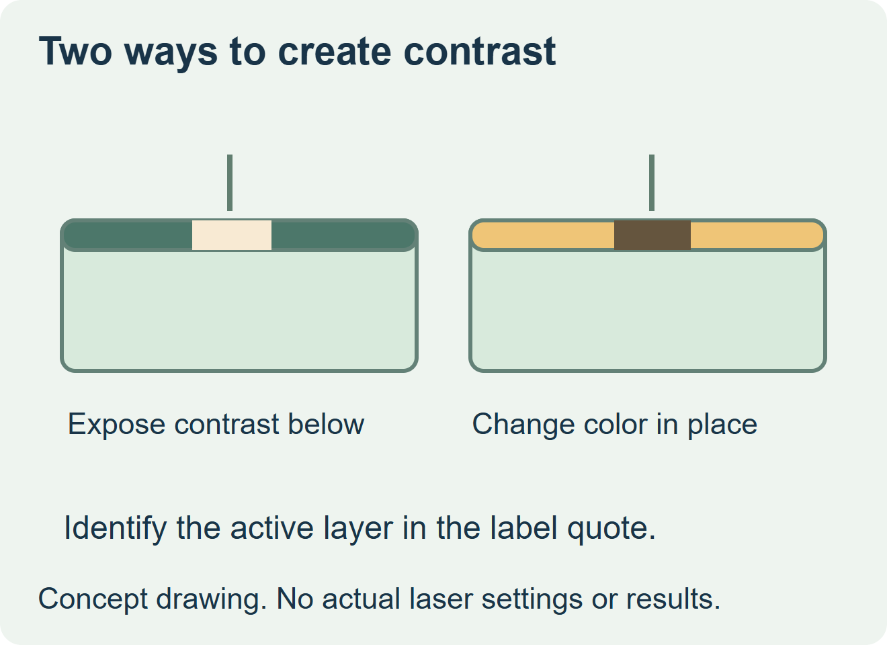
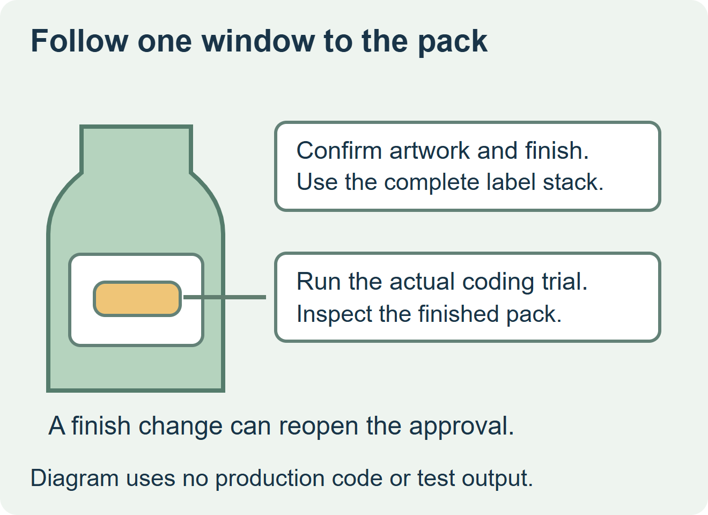

Specify an ablation panel when the installed laser and supplier can remove a defined surface color layer to expose a contrasting layer beneath it. Compare a reactive coating when the selected formulation changes color with the qualified laser and the label needs a mark without intentional layer removal. Review both as finished label constructions. A clear-looking window can still have a laminate over the working layer.


Tell the converter which layer is supposed to change
Videojet describes contrast formed by removing a coating to reveal a different color. DataLase describes an alternative route in which a reactive coating or additive changes appearance under a suitable laser. These references explain the mechanisms. Ask the material and equipment suppliers whether the specific label and installed equipment support the selected route. Videojet laser marking guide and DataLase color-change mechanism
| Proposed route | What to specify on the order | What the trial must show |
|---|---|---|
| Removal of a defined color layer | The removable graphic coating, exposed contrast layer, protective finish and allowed window. | The mark reveals the intended layer and leaves the approved structure suitable for handling. |
| Color change in an identified layer | The reactive formulation, its location in the finished label, and approved equipment compatibility. | The intended mark forms through the proposed layer arrangement and stays readable in use. |
| Unknown lamination or coating coverage | Request the final stack and an actual labeled specimen before releasing the order. | The sample contains the same ink, primer, coating and laminate as the production proposal. |


Check the complete label at the actual station
Have the converter identify each layer in the marking zone and put its boundaries on the artwork and finish drawings. Ask whether expected placement variation could take part of the code beyond that zone. Evaluate the actual labeled bottle or can after the supported line trial. The equipment owner should run the test under its approved guarding, extraction and operating procedures. Product and packaging owners should assess any unintended mark, deformation or other change outside the intended coding layer.
For a hypothetical beverage brand, a sample with an unlaminated panel gives the requested contrast. Production artwork then adds a full gloss film. That change can affect the marking route, so ask for another finished sample before accepting the revised order. Use the longest intended field and include the relevant chilled handling, wiping and final viewing conditions in the agreed review.
Record what the supplier actually offered
Keep the approved marked sample, equipment reference, layer drawing, finish mask and the permitted exposure with the purchase brief. Compare the cost of the complete panel and any extra converting work. Specialty chemistry, converter capability and coding support require project confirmation. Ask the packaging team to confirm the end-use and material boundaries for the completed label.
Discuss the unresolved label requirement
Send the coder make and model, supported marking route, window location and largest field, proposed ink/coating/laminate stack, representative filled containers, exposure and order quantities. Review beverage label options and prepare a label specification inquiry. The contact page opens an email draft and lists email or WhatsApp for attachments. Supply, proof options, testing, pricing and timing require project confirmation.